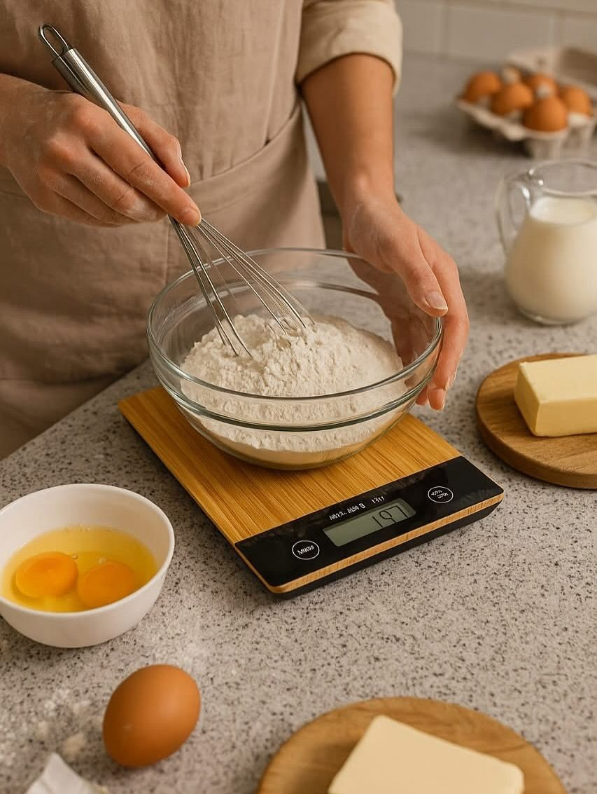
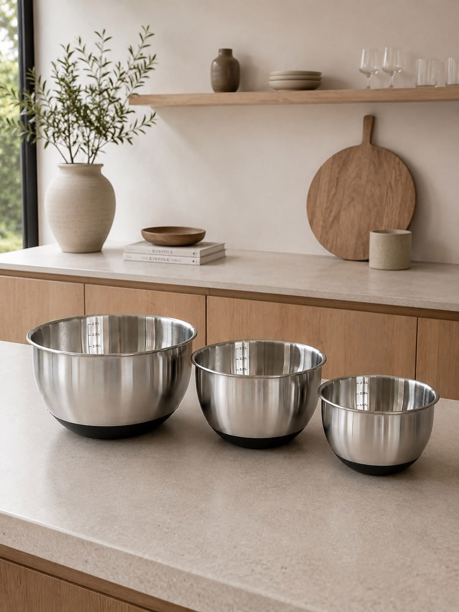
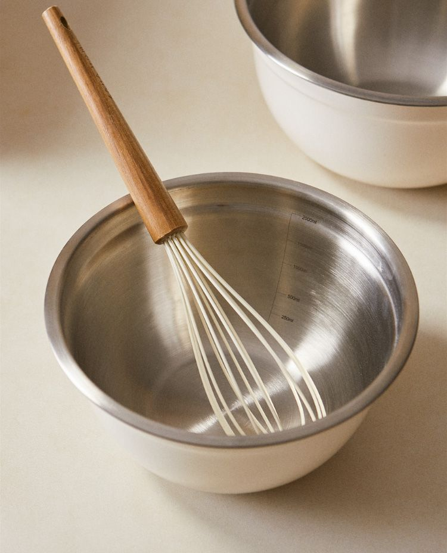
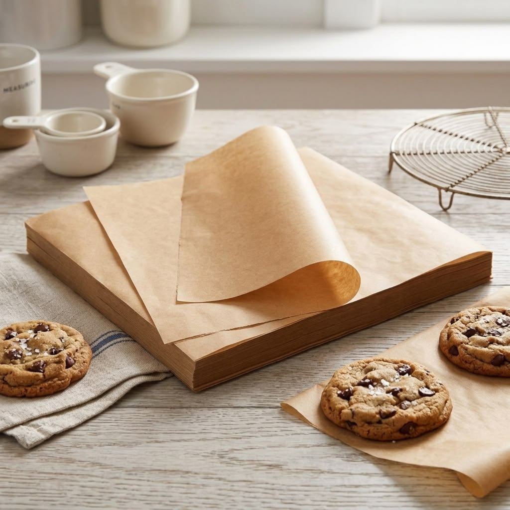
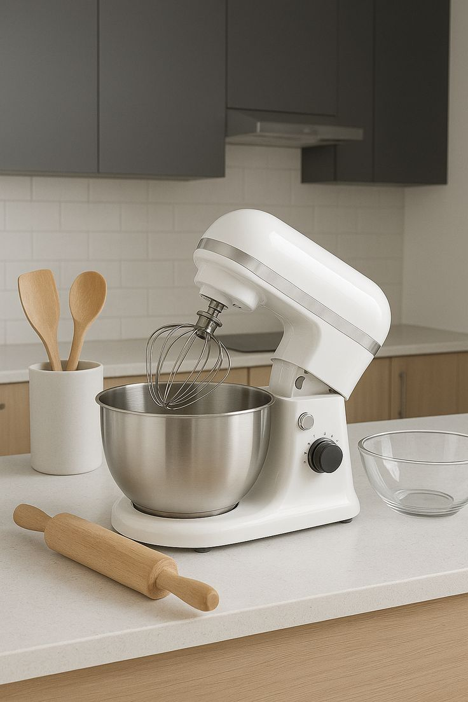
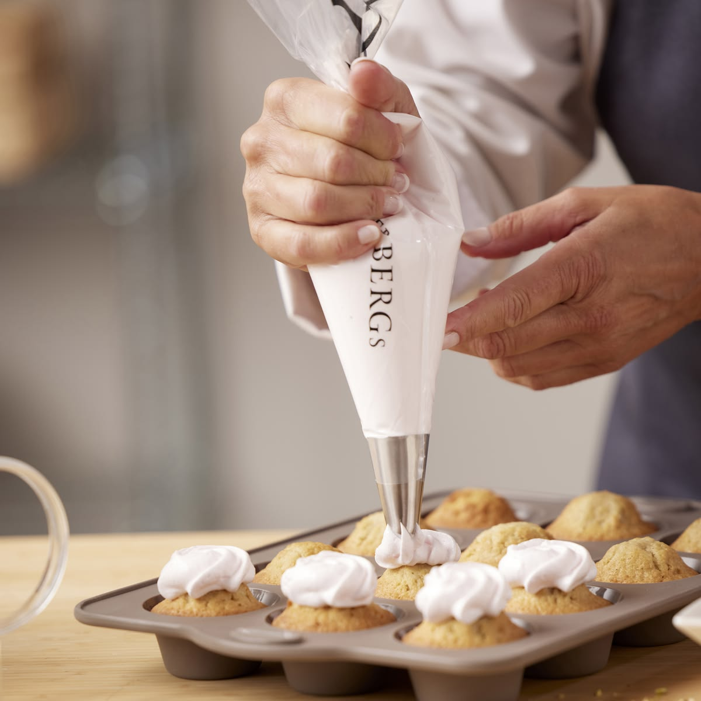
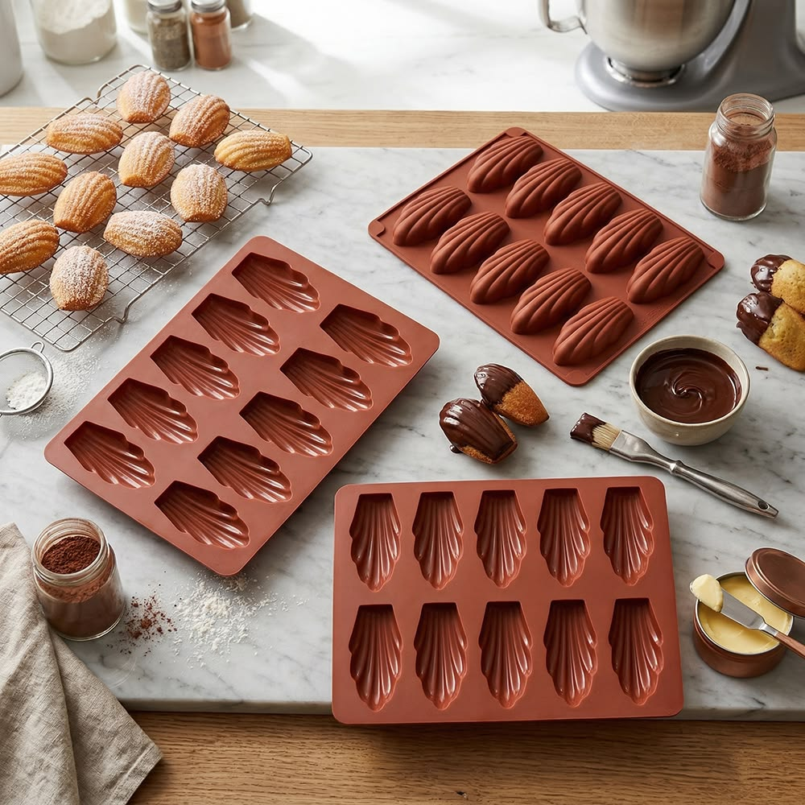

UDSTYR TIL BEGYNDERE
Du behøver ikke et helt nyt køkken.
Du kan starte med få simple ting. Meget af det har du måske allerede.
DET VIGTIGSTE
Det skal du bruge for at komme i gang.

Køkkenvægt
Mål dine ingredienser præcist.

Røreskål
Brug den til at blande dejen i.

Piskeris
Godt til at blande simple ingredienser.

Bagepapir
Gør det nemmere at bage.
DET KAN VENTE
Det behøver du ikke endnu.

Køkkenmaskine
En almindelig skål og et piskeris er nok.

Specialforme
Start med det, du allerede har derhjemme.

Sprøjteposer
De er gode til pynt, men ikke nødvendige nu.

NÆSTE TRIN
Har du det vigtigste?
Så er du klar til at begynde at bage.
Prøv dit første projekt →